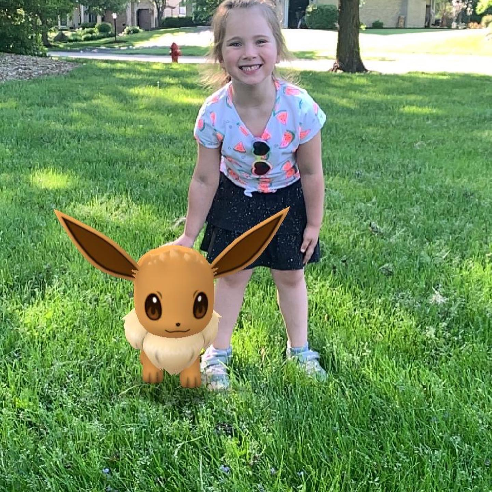

A hobby I recently have gotten into is the game Magic the Gathering. I really enjoy playing with all my friends. Even during social distancing, My friends and I have figured out a way to play over Discord.
Each person can create their own style deck of cards that they enjoy the most. My favorite deck that I have is my Dragon deck. I have spent a lot of time making it the way I want it to be.
Another hobby I enjoy are video games. I like to play on my Xbox, Nintendo Switch, and my computer. I mostly enjoy single player games. I am not big into playing online. I occasionally will play online with my friends.
I really enjoy sharing my hobbies with my daughter. Her and I love to go on walks and play Pokemon Go. We will also have game night on Fridays and play on the Nintend Switch. She loves to race me in Mario Kart.
I love to stretch my imagnation and be creative. I highly enjoy many hands on crafts. I have tried almost every kind of craft from knitting to painting. I am currently very much into Diamond Painting. It is a lot like color by number and mosaic design.
Cooking is another creative hobby I enjoy. I love cooking new recepies and trying new things. I will always try new things and try to make all the food I cook my own. I have never followed a recepie exactly how it is written, I have always changed it up and made it my own.